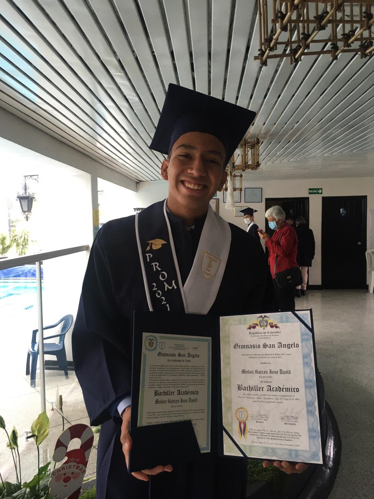

Soy José David Muñoz Garcés. Mi historia comenzó el 23 de junio de 2004 en Moniquirá, Boyacá,
Colombia. A medida que he ido creciendo, he adquirido valiosa experiencia que me ha permitido crecer
en todos los aspectos de mi vida.
En mi tiempo libre, disfruto viendo Fórmula Uno y fútbol, especialmente los partidos del Real
Madrid. Me gusta montar en bicicleta y también me sumerjo en los videojuegos para relajarme.
Anteriormente, el fútbol era mi pasión principal.
A lo largo de mi recorrido, he conseguido destacados logros, principalmente en el ámbito deportivo.
Mis mayores éxitos se han registrado en torneos locales, donde he obtenido los honores de campeón,
subcampeón y tercer puesto en la liga de Bogotá.
Comencé en el Jardín Nuevo Horizonte, donde aprendí las bases de la educación. Luego, me mudé al
Gimnasio San Angelo, donde continué mi educación y desarrollé mis habilidades académicas y
personales. Actualmente estoy estudiando en la Universidad El Bosque, donde me preparo para
convertirme en ingeniero de sistemas.
Nuevo Horizonte
Mi primer Colegio
Gimnasio san angelo
Mi primer dia en mi nuevo colegio.

Gimnasio san angelo
dia de mi graduacion de once.
Mi familia está conformada por mi padre, mi madre, mi hermana mayor, mi hermano menor y nuestra
perrita, Mia. En el pasado, tuvimos a dos perros más: Sacha, nuestra primera perrita, que falleció
en un accidente, y Goku, un perro muy alegre que nos enseñó mucho sobre el amor y la
responsabilidad.